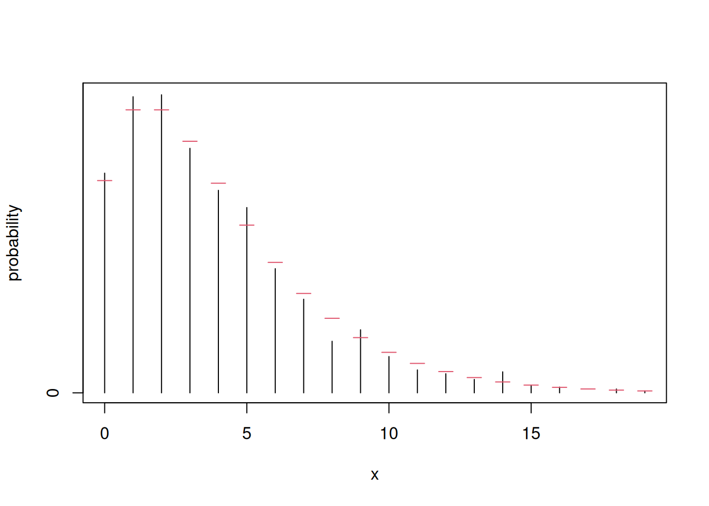
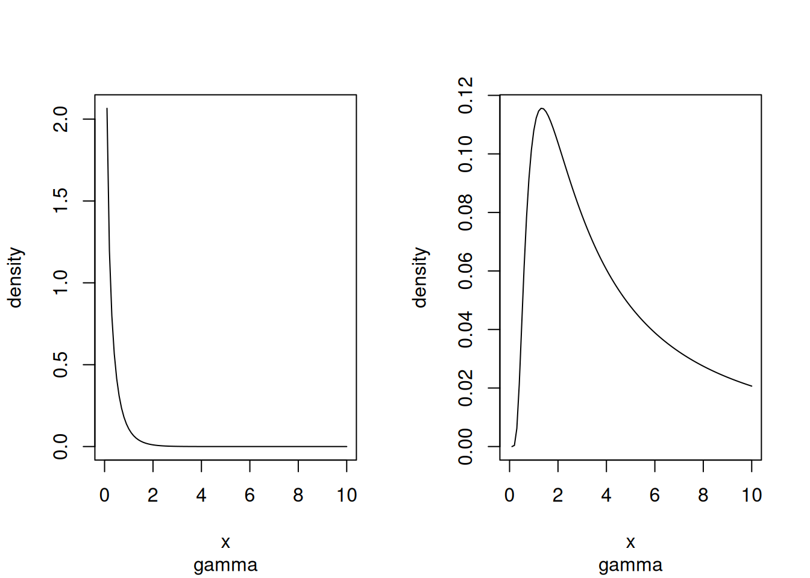
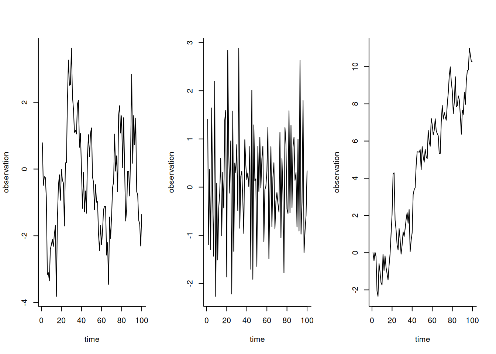
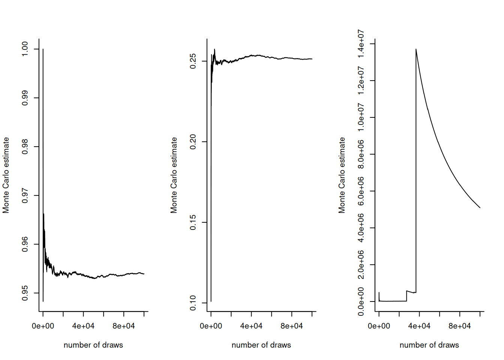

# Sample the means of the Poisson
n <- 1000L
k <- 0.5 # dispersion
mu <- 4 # mean
# The gamma distribution has a mean of 4 and variance of 8
Lambda <- rgamma(n = n, shape = k*mu, rate = k)
# Functions r* for random number generation are vectorized wrt arguments
Y <- rpois(n = n, lambda = Lambda)Lecture 1
Hierarchical model
We use the hierarchical Poisson–gamma model to account for overdispersion. This gives an example of how to simulate from the marginal model (here negative binomial) by forward sampling: we first generate the means \(\Lambda\) from the gamma distribution, then for each value of \(\Lambda\), we generate a corresponding count. The functions for random number generation in base R are vectorized with respect to their arguments.
We can use Monte Carlo integration to compute moments \(\mathsf{E}_Y(Y)\) and \(\mathsf{Var}_Y(Y)\) and compare these estimates with the numbers derived analytically.
# Calculate the empirical mean and variance of the counts
# This is a form of Monte Carlo integration
rbind(empirical = c("mean" = mean(Y), "variance" = var(Y)),
theoretical = c("mean" = mu, "variance" = mu + mu/k)) mean variance
empirical 3.9 11
theoretical 4.0 12We established that the marginal distribution of \(Y\) from the Poisson mixture of gamma is negative binomial. We can compare the theoretical mass function with the Monte Carlo estimate (proportion for each integer) to see whether they match, up to sampling variability.
# Create a bar plot manually and compare with marginal CDF of neg. binom
plot(
x = sort(unique(Y)),
y = table(Y) / length(Y),
type = "h",
xlab = "x",
ylab = "probability"
)
segments(
x0 = 0:max(Y) - 0.25,
x1 = 0:max(Y) + 0.25,
y0 = dnbinom(0:max(Y), prob = 1 - 1/(k + 1), size = k*mu),
col = 2)
Change of variable formula and Jacobian
We consider Example 1.5 from the course notes (gamma to inverse gamma). We use \(y = g(x) = 1/x\), whose Jacobian is \(J_g=1/x^2\) in the formula for the density \(f(y) = f_x\{g(x)\}|J_g|.\) The resulting density integrates to unity over \(\mathbb{R}_{+}\).
shape <- 0.5; rate <- 2
# Jacobian of transformation 1/x is 1/x^2
dinvgamma <- function(x, rate, shape){
dgamma(1/x, rate = rate, shape = shape) / x^2
}
integrate(f = dinvgamma, lower = 0, upper = Inf, rate = rate, shape = shape)1 with absolute error < 1.1e-05par(mfrow = c(1,2))
curve(
expr = dgamma(x, rate = rate, shape = shape),
from = 0,
to = 10,
ylab = "density",
sub = "gamma")
curve(
expr = dinvgamma(x, rate = rate, shape = shape),
from = 0,
to = 10,
ylab = "density",
sub = "gamma")
First-order autoregressive process
The autoregressive of order 1 model, defined as \[ Y_t = \mu +\phi(Y_{t-1}-\mu) + \varepsilon_t, \] where \(\varepsilon_t\) are independent and identically distributed white noise, typically mean zero Gaussian, is stationary if \(|\phi <1|\). By the law of iterated variance, we find that the unconditional variance is \(\sigma^2/(1-\phi^2)\), and increases with \(t\) otherwise if \(|\phi| \ge 1.\) The code below shows simulations of three instances: one with positive correlation, which seems to show local nonstationarity although the process is mean-stationary, the second with negative correlation which oscillates around the truth. The last, initialized at zero, is a random walk which drifts towards infinity as \(t\) increases.
simulate_ar1 <- function(n, phi, mu = 0, sigma = 1){
y <- numeric(n) # container of size n
# simulate from marginal if process is stationary
y[1] <- ifelse(abs(phi) < 1,
rnorm(n = 1, sd = sigma / sqrt(1-phi^2)),
0)
for(i in 2:n){
y[i] <- mu + phi * (y[i-1]-mu) + rnorm(n = 1, sd = sigma)
}
return(y)
}
set.seed(2026)
par(mfrow = c(1, 3), bty = "l")
# Strong positive correlation
plot(
simulate_ar1(n = 100, phi = 0.75),
type = "l",
ylab = "observation",
xlab = "time")
# Negative correlation (oscillates around the mean)
plot(
simulate_ar1(n = 100, phi = -0.5),
type = "l",
ylab = "observation",
xlab = "time")
# Non-stationary (increasing variance)
plot(
simulate_ar1(n = 100, phi = 1),
type = "l",
ylab = "observation",
xlab = "time")
Values of \(|\phi| \geq 1\) yields nonstationary processes, whose variance increases over time.
Monte Carlo estimation
Monte Carlo integration, which relies on the law of large numbers, replaces integration by sample averages. The precision of the estimate increases with the number of draws \(B\) (the sample variance decreases at rate \(B^{-1}\)). The illustration below with gamma variates with shape of \(\alpha =1/2\) and rate \(\beta=2\) for three expected values: the first is a probability, the second the expected value, and the third the first reciprocal moment which is undefined, as the integral diverges whenever \(\alpha \le 1\). We can see this lack of existence translates into erratic jumps in the estimates path.
set.seed(80601)
B <- 1e5L # number of simulation
Bseq <- seq_len(B)
# Parameters for shape and rate
alpha <- 0.5; beta <- 2
pv <- pgamma(1, shape = alpha, rate = beta)
samp <- rgamma(n = B, shape = alpha, rate = beta)
# Running means of the parameters
int1 <- cumsum(samp < 1) / Bseq
int2 <- cumsum(samp) / Bseq
int3 <- cumsum(1/samp) / Bseq
par(mfrow = c(1,3), bty = "l")
plot(
x = Bseq[-(1:20)],
y = int1[-(1:20)],
xlab = "number of draws",
ylab = "Monte Carlo estimate",
type = "l")
plot(
x = Bseq[-(1:20)],
y = int2[-(1:20)],
xlab = "number of draws",
ylab = "Monte Carlo estimate",
type = "l")
plot(
x = Bseq[-(1:20)],
y = int3[-(1:20)],
xlab = "number of draws",
ylab = "Monte Carlo estimate",
type = "l")
# Compute std. error of estimator of total size (assuming it exists)
se1 <- sqrt(var(samp < 1) / B)
# 95% Wald-based confidence interval
confint <- mean(samp < 1) + se1 * qnorm(c(0.025,0.975))
# Compare with truth
pv[1] 0.95